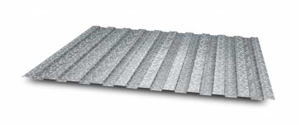

Profile sheet of colored or galvanized steel is unreplaceable in construction of industrial facilities, farms, land improvements, internal and external decoration of buildings. The main advantages of the metal profile are: light weight, easy mounting, durability, affordability, neat appearance. Profiled flooring in different variance of wave summit sheet thickness is used as load-bearing roof structures, temporary or permanent fences, facade cladding.
At 2015, POTOKI GROUP has launched a production of steel profiled sheeting with galvanized coating and polymer coating and since then is developing dynamically as a national manufacturer of quality products.
You can buy profiled sheeting of the following categories:
1. Wall sheet НС-20.
2. Roof bearing sheet Н44, Н-57, Н-75.
3. Fence sheet С-8.
We thoroughly monitor quality standards and use raw materials of proven Ukrainian and foreign manufacturers. Offering profiled flooring in bulk POTOKI GROUP supplies building owners with products on the most favorable terms.
If you wish to enlist the support of reliable supplier then you will realize your expectations by buying profile sheet from us. We fulfil orders:
• within an agreed timeframe;
• competitively priced;
• considering customer's requirements and wishes.
In our catalog, you can find a guide on colouring for profiled sheeting with a polymeric color coating and schemes of varieties for profiled flooring.

Steel thickness from 0.33 up to 0.70 mm
Steel length from 0.5 up to 12 m
Profile sheet С-8
Being the most cost-effective with regard to the usable width, profiled flooring C-8 is indispensable and demanded product for wall facing, making enclosure, good when creating the dividing walls and underroofs in sandwich-panels of sheet-by-sheet method.
Steel thickness from 0.33 up to 0.70 mm
Steel length from 0.5 up to 12 m
Profile sheet НС-20
Profiled flooring HC-20 due to its characteristics is deservedly got in the top of the best Ukrainian products. Due to the balanced geometry regarding the height and width, this profiled flooring can be used as a wall cladding and roof sheeting profile.
Steel thickness from 0.33 up to 0.80 mm
Steel length from 0.5 up to 12 m
Profile sheet НС-35
The most appropriate material for arrangement of the roof or panel lining is profiled flooring HC-35. It was elaborated as a high-strength material with increased durability. The parameters of profiled flooring is perfectly designed to withstand the heavy snow loads at large distance between the purlins.
Steel thickness from 0.40 up to 0.80 mm
Steel length from 0.5 up to 12 m
Profile sheet НС-44
An important part in construction projects is profiled flooring that is capable to withstand a heavy load of higher precipitation and load from wind pressure. Profiled flooring HC-44 is ideally suited because of high flute height and mounting width that combine perfectly and represent a high-strength product itself.
Steel thickness from 0.45 up to 1.00 mm
Steel length from 0.5 up to 12 m
Profile sheet Н-57
This multi-purpose profiled sheeting can be applied in roofing, permanent form and concreting of interfloor overlapping. Its high strength and durability allow this material to be used in producing the three-ply roofing pie that includes the profiled flooring, insulant and moisture penetration barrier.
Steel thickness from 0.45 up to 1.00 mm
Steel length from 0.5 up to 12 m
Profile sheet Н-75
This product used for mill buildings roofing production, warehouse complex building, etc. If you have planned the concreting of building slabs, then this profiled flooring will play an irreplaceable role in the capacity of stay-in-place form.
Colors of RAL
No
8017
3005
6005
5005
9003
9006
1015
Resistance and durability
Galvanizing coating and polymer coating protects metal from atmospheric exposure that causes corrosion and rust. Profiled sheeting with polymer coloring perfectly resists corrosion for 25 years of use that makes it as good as undulus, metal tile or table slate.
Best price
: It is hard to find a better material than profiled flooring when you need a roof or a fence at a reasonable cost. Having an excellent appearance profiled flooring is still cheaper than other cladding materials for roofs and walls. The fence made of galvanized or colored profile sheet perfectly performs protective and decorative functions for less cost.
Fireworthiness
: Profiled galvanized sheet does not spread fire and does not support burning, therefore it is used for constructing buildings of industrial, residential and administrative areas.
Finest quality and environmental friendliness
For profiled sheeting manufacture we use raw materials of domestic and foreign manufacturers. An improved polymer coating formula allows using color profiled flooring inside and outside residential buildings.
Weight and area calculator
1Profile sheet type
(wave height)
2Length of profile sheet
(from 0.5 up to 12 m)
3Total width of the area
for covering with a profile sheet
4Steel thickness (mm)
profile sheets quantity
total sheet area (m2)
effective coverage area (m2)
total order weight (kg)
Результат
0
0
0
0
Since 2006, the corrugated metal produced by Potoki Group is considered the best according to the NSU. This is the result of the skills of employees, the use of branded German equipment and the using of new production technologies. We know our business. Therefore, every year we carry out hundreds of orders and are always ready to receive yours. Potoki Group is the leader in the processing of sheet steel in Ukraine.
A lot depends on the quality of the corrugated board. Therefore, the profile sheet of our production has a 4-layer combined corrosion protection. And the metal itself is rolled on imported German equipment. For the quality of sheet metal meet time-tested partners. We can produce up to 80,000 meters of profiled sheet per day. When ordering our wholesale flooring, you do not overpay the stores and save up to 20% of your funds.
The assortment is one of the priorities. We produce profiled sheeting with 10 different designs and in 16 colors. A choice of thickness from 0.33 mm to 1 mm allows you to buy corrugated board for fences, cladding, roofing, formwork and even load-bearing structures.
Buy a profile sheet from us - get a certified product. In addition, we are ready to deliver it to any point in Ukraine as soon as possible.